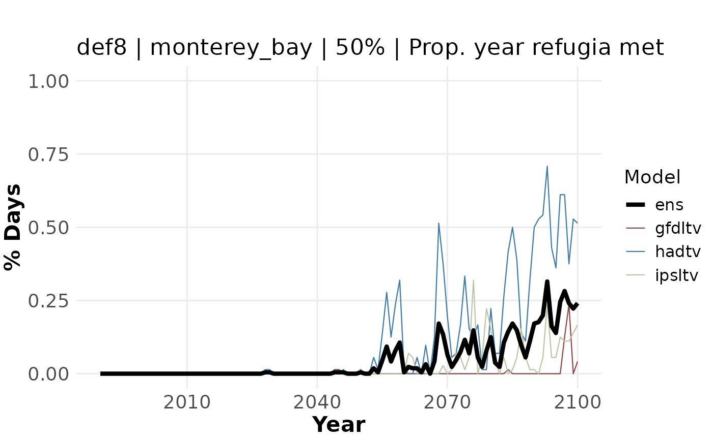

Plot proportion of year meeting refugia conditions over time
Source:R/ts_viz_refugia.R
ts_viz_refugia.RdThis function produces a ggplot2 object of an annual time series of refugia
across all ESMs, including the ensemble mean. It tells you the proportion of each
year that refugia condtions were met, based on the temporal threshold used. Note
this function will only work for refugia definitions that are calculated using
% of year defined as refugia (i.e., not Definitions 1-2).
Usage
ts_viz_refugia(
area = c("monterey_bay", "channel_islands", "fort_bragg", "san_francisco"),
yr_range = 1990:2100,
def = "def8",
input_file = abalone::percentdays,
persist_thresh = c(50, 95),
extent_list = abalone::extent_list
)Arguments
- area
Character. Name of the area; must match a key in
abalone::extent_list.- yr_range
Numeric vector. Range of years to include. Default is 1990–2100.
- def
Character. Refugia definition name (e.g., "def8") used in input file paths.
- input_file
R Object. Dataframe of % of year stressed. Defaults to
abalone::percentdays- persist_thresh
Integer. Value representing the temporal threshold used to define refugia
- extent_list
List of vectors. Defaults to
abalone::extent_list
Value
Produces a ggplot2::ggplot object of an annual time series of refugia.
Examples
ts_viz_refugia(area = "monterey_bay", yr_range = 1990:2100, def = "def8",
input_file = abalone::percentdays, persist_thresh = 50,
extent_list = abalone::extent_list)
